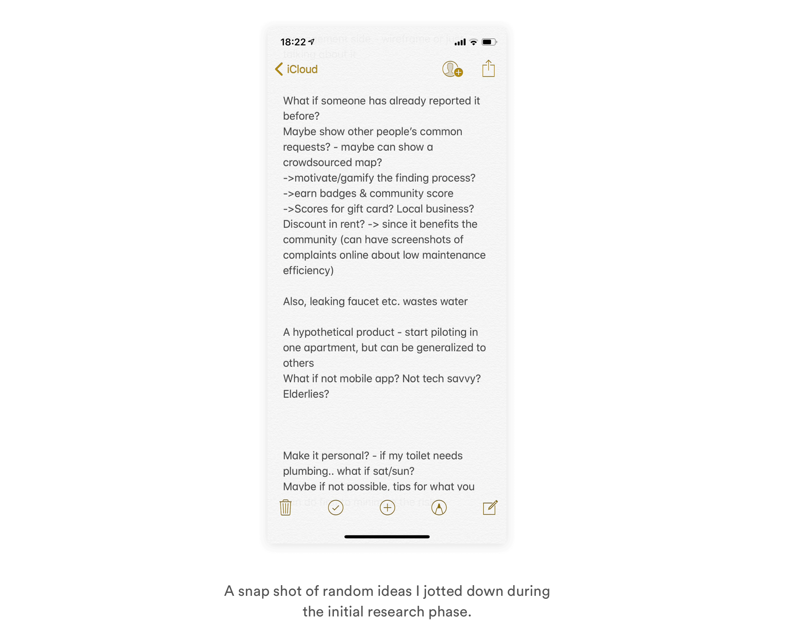
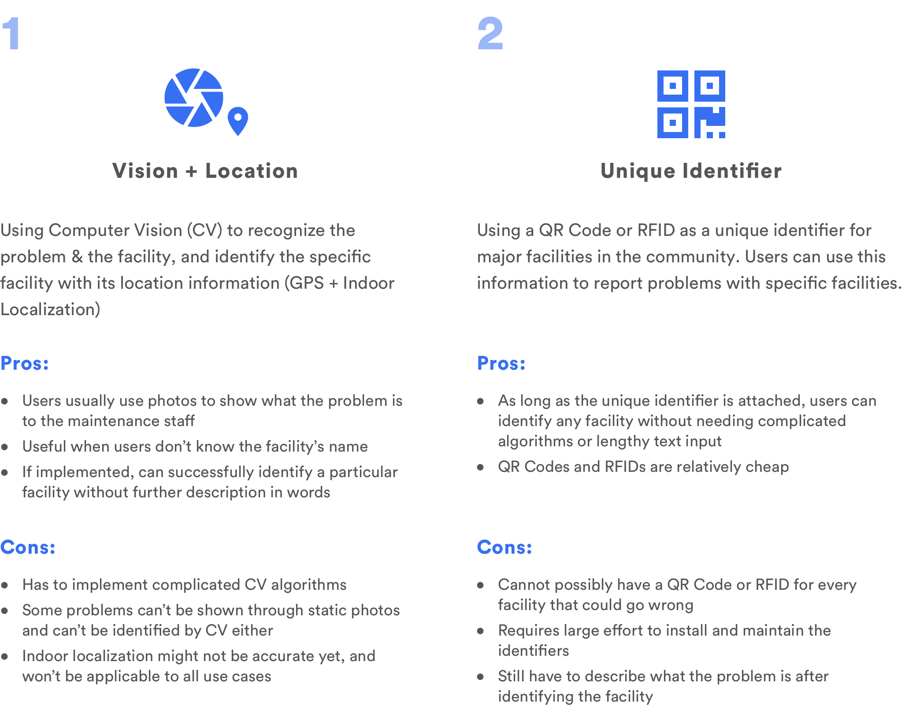
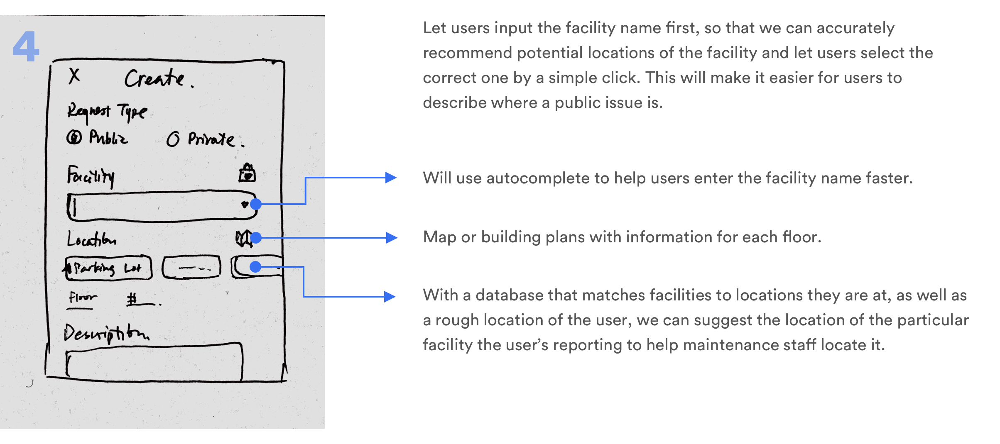
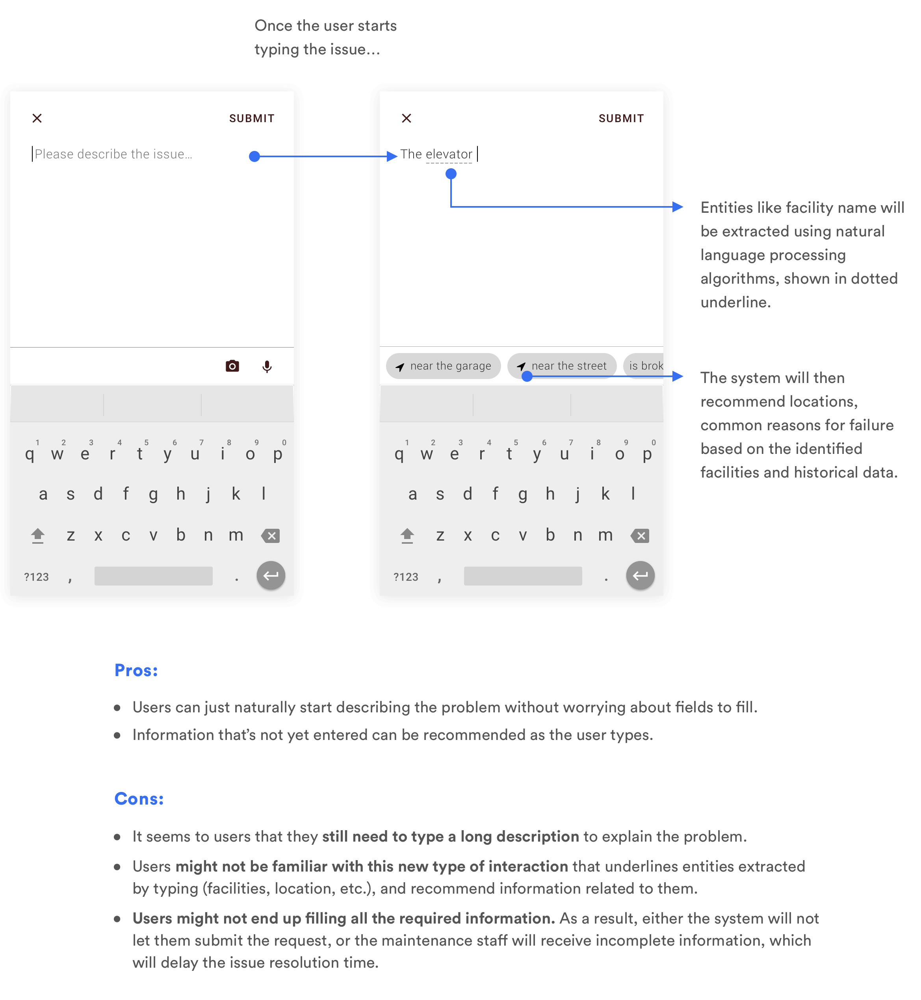
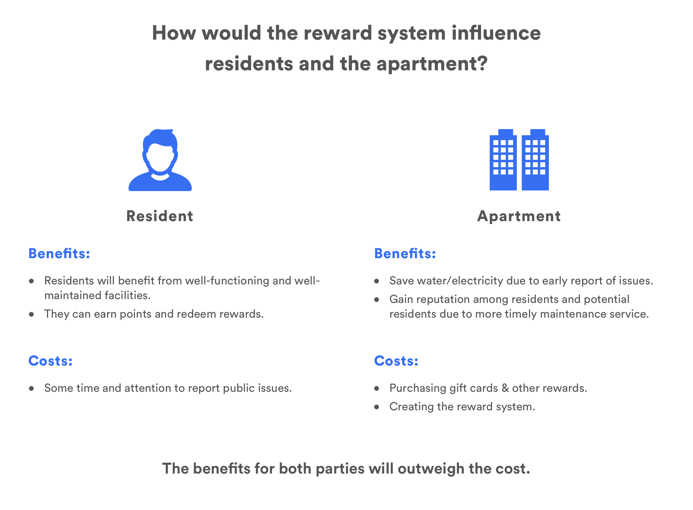

Overview
Problem
For students and young professionals living in apartments, it is hard to submit maintenance requests, track their statuses, and get quick help on small things. Public facilities also fail from time to time, but few people would report them, leaving them broken for days or weeks.
Solution
I designed an app with AI chatbot and voice control, so that residents can quickly report issues in a natural way. Users can also track their request status and maintain open communication with maintenance staff and their roommates. I also incorporated a rewards mechanism to motivate users to report public issues and contribute to the community.
Timeline
7 Days
Project Info
Google Design Exercise
Tools
Sketch, Marvel, InVision, Principle, Realtime Board (Miro), Paper & Pen
You Say It, We Solve It.
Describe the issue the way you want, and we'll help you resolve it fast
Just describe the problem by talking, taking a photo, or typing. Our chatbot suggests frequent issues and autocompletes any request you enter. For simple requests, we'll suggest short video clips and articles from online. Submitting and resolving an issue has never been faster.
Know What to Expect
Know who's coming to help you, and when things will get fixed.
Afraid to shower or sleep because you don't know when maintenance will come? Don't know when you could use your kitchen faucet again? Now, you can track the status, edit your requests, and connect with the person assigned to your request.
Contribute and Earn Rewards
Report public issues to earn the community's appreciation and gift cards
By reporting public issues, you are helping the community maintain its facilities and get issues fixed faster, benefiting everyone around you. You'll also earn points that you can use to redeem a variety of gift cards and discount.
Works with Google Home
No need to open the app. Let Google help you handle it.
We know that opening your browser or your app to report an issue sounds annoying. Don't worry, just say your complained out loud, and our Google Assistant Action will help you create, track, and follow up with any issue.

Research
Project Scope & Audience
Because of the time limit of the exercise, I started by setting the scope and target audience for myself, and making a couple of assumptions to keep me focused.
Target Audience
I decided to target an apartment in Midtown Atlanta because of my easy access to users. The community is young, lively, busy, and full of energy, and its residents are mostly students and young professionals. The apartment has its own maintenance staff that will handle residents' maintenance requests.
Ideally, the product would satisfy the needs of all stakeholders involved, including residents, maintenance staff, and the company that owns the apartments. Since I had limited access to the latter two, I based my design mostly on user needs, but also tried to look online to try my best to consider the needs of other stakeholders.
Assumptions
To scope my design, I also made the following assumptions:
- There is a digital inventory with the community's facilities and their detailed information (location, repair history, etc.)
- Each user has an account that will be linked to their apartment number and their maintenance history.
- I could leverage existing machine learning algorithms (computer vision, voice recognition, autocomplete, etc.) in my solution if the implementation effort is worth the results.
Focus
There are a variety of edge cases as I delved into the problem deeper. Because of the time limitation, I decided to demonstrate my solution through mostly normal use cases. I also consider edges cases and will describe them in future steps.
Background Resesarch
Leveraging Online Resources
In order to quickly understand the design space within the time limit, I started by Googling articles related to general maintenance request. The articles helped me understand how things work from the maintenance staff's perspective, as well as get to know different issues that users encounter. They also helped me frame my initial user interview questions.
I also tried out a couple of maintenance request systems and apps I have access to. They helped me get a quick idea of a range of community issues that might happen and how different communities currently handle maintenance requests.
Keeping Ideas Open
What I found useful from my recent design experiences is to first start a document with all my random ideas related to the topic and keep updating it whenever any new ideas come to my mind as I'm reading, researching, wandering around, or even showering. By tidying up these ideas, I found a number of assumptions and opportunities that ended up inspiring my user interview questions and my ideation session.
User Interviews & Analysis
I conducted quick interviews with residents living in a local apartment in Midtown Atlanta. The goals was to 1) understand problems users encounter when reporting issues about public and private facilities in the community and 2) uncover deeper human needs that lie behind those frustrations so that my design can address them.
I analyzed the results by creating an affinity map in Miro (formerly RealtimeBoard). With the results, I created the following personas and formulated my design goals.
Personas
Issues regarding a residential community can get really personal. That's why I represented the research results using the following personas, to help me empathize with my users.

Design Goals
To help me maintain focus during the design phase, I derived four overall design goals that will address the needs and frustrations encountered by my target audience. Again, I intentionally made the goals highly personal, starting from the user's feelings, emotions and motivations to make sure that my design doesn't only touch upon the surface of the problems. These goals will also become my criteria for measuring the success of the product.

Design
With the personas and design goals in mind, I started brainstorming potential solutions that will address each design goal.
Ideation
For each goal, I started writing and sketching down potential solution that can address these goals. At this stage, I didn't consider the feasibility of the ideas, but rather took down anything that came to my mind.
I also walked "mindfully" around the apartment building, going into different common spaces and try to use those facilities. This enabled me to consider a variety of scenarios, from missing coffee packet to broken equipments in the gym.
I then referred back to my design goals and thought about how the features would work together to meet the goals. I also categorised my ideas into yes, no, and future steps based on their potential benefits versus the implementation feasibility/cost.
I eventually decided to create an app together with a Google Home Action to address the problems I identified. I'll highlight a couple of challenges and important decisions below.
Some might argue that the users might not want to install another app on their phone just for submitting maintenance requests. While that is a valid point, I still decided to use an app instead of the other alternative, a website for several reasons:
- One of my goals is to encourage users to submit public issues. Assuming that users would mostly submit issues immediately when they notice them, I decided that mobile app is the easiest platform to access in this context.
- The perceived effort for submitting a request is lower on app. One user told me that he didn't even want to submit issues about his own apartment because "it's too much effort to start my computer and search for how to do it." In an app, however, users can just take out their phone and enter it anywhere, or even use voice commands (with Google Assistant, Siri, etc.)
- Sometimes users use photos to explain the problem. It is much easier to take a photo and annotate it on an app compared to a website (desktop or mobile).
- To further motivate the use of the app, I could envision the app to be a central place to build a great community, including not only maintenance request functions, but also events nearby, discussions with neighbors, etc. However, the scope of such a project and the feasibility of it can be further discussed.
Challenge Highlight: How to Simplify the Report Process?
Whether for public issues or private issues, one of the largest frustrations users have right now is that the reporting process is really complicated.
From the user's perspective, they just want to quickly report the issue, get on with their life, and have the issue fixed. They have no time or interest in spending much time describing the issue. From the maintenance staff's perspective, however, they need enough information about the issue (location, severity, facility, nature of the problem, etc.) so that they can send the right people with the right tools to solve it quickly.
Current reporting tools typcially ensures the detailedness of the description by having users classify the issue into categories and sub-categories, and select the detailed location of the problem from a predefined location list.
However, the categorization is not clear to most users, and all of them spend a long time going through each list with dozens of items, trying to report a simple issue. If the issue's not an emergency, a lot of them even give up or not bother reporting, whether it's a private issue or a public issue.
The challenges ultimately comes down to two questions:
- How can we design a reporting process that is quick and easy for users to go through, but also ensures that the maintenance staff get enough information?
- How can we also make sure that the solution will be applicable to all kinds of issues in the community, ranging from broken elevators to cockroach problems to paper jams in a specific printer?
Design Alternatives: Novel, Simpler Ways for Input
With these questions in mind, I started writing & drawing down alternatives. I quickly thought about 2 ways to help users more quickly and accurately identify issues with a particular facility:
To minimize user's text input, I chose two methods involving photos. However, these approaches either require large implementation efforts, or are not quite feasible given the current state of our technology. Still, taking a photo would help users better describe an issue, especially if they can annotate the photos. Therefore, I kept this idea for further consideration.
I then thought about another way to simplify user's input:
Overall, voice seems to be especially suitable for our problem, because users already know what the issue is. Instead of letting them find the issue again from a list, it's easier to let them just say it.
That said, voice cannot be the default input for all cases due to its limitations. I need to provide my users with other options is voice recognition fails, or if they are reluctant to use it in some circumstances. Therefore, I decided to incorporate voice, and at the same time design a visual UI to let users input information using text and images.
Design Alternatives: What Should Text Input Look Like?
To design a more usable text input, I have to make sure users don't have to spend much time figuring out the category of the problem, or which location they should input. Instead, I hope to follow my general design philosophy, and take care of most of the work nearly automatically for the user, with the technology supporting it hidden in the background, only to let users know how the magic happens if they want to learn about it.
I started from several basic design alternatives on how I would structure the issue report page to make it simple for the users, remind users to enter enough information, and support all the use cases for issue report.
Since reporting public issues and private issues might be different, I started from think of use cases mostly for reporting issues in one's own apartment.

Another alternative I thought about was to let users enter the broken facility information first, because that's the first thing that comes to one's mind--that something's broken. Asking the facility first can also help the system suggest locations to better locate the facility based on where those facilities might be located at (there might be 3 exits on the same floor within the same building, so it's important to specify which one is broken). This can be helpful especially when GPS cannot help users locate where exactly they are in an indoor setting.
Feedback & Pivot: What If Users Don't Need to Fill a Form at All?
I took the 4 design alternatives to users to gather some initial feedback. Even though I tried my best to simplify the process, users still felt that it took them too much effort to fill in the "form" with different fields. One user mentioned:

The feedback I got pushed me to think even more about how to simplify the solution, which is still not quite there yet. If the users don't want to think so much about the different text fields, can we let them just start by describing the problem in their own way? Based on their input, we can automatically identify facility names, and suggest locations and common problems based on that.
In this case, the user will have to type in a large text field and nothing else. This can be both an advantage and a disadvantage. The advantage is that users don't have to go through several dropdown menus to fill in different information required. The disadvantage is that in such a blank text field, the users have to type in everything themselves. Though we will suggest location names and reason for failure below, users will still perceive the task as complicated because of such a large space they think they have to fill. It's also possible that the users don't end up filling all the required information, so that the maintenance staff will not have enough information about the problem to fix.
Therefore, we need to have something that allows users to enter the information naturally, preferrably short pieces of information, and inquire about further details only if necessary. This sounds like...
A chatbot!!!
Though implementing a smart chatbot might be a lot of effort, the solution does makes it much easier for users to submit a request, which is one of the largest problems I identified through research.
If I had access to engineers, I would further discuss with them about the implementation difficulty versus the benefits we'll get from the function, to determine whether we should use a chatbot.
Challenge Highlight: Motivating Users to Submit Public Requests
Users all complain about public facilities failing, which greatly impact their lives, but few of my interviewees said that they would report the issue; they either think that others will do it, or think it's too complicated to file the request.
One way to encourage them to report public issues is to make the reporting process easier, and I have already talked about it in the previous section. However, making it easy is not enough. If there is no immediate benefit users can see about reporting public issues, most of them still would not do so.
After generating several ideas, I eventually decided to create a reward mechanism to encourage users.
I also evaluated the costs and benefits it will bring to the apartment and its residents to make sure that the two stakeholders involved will accept and benefit from the proposal.
Wireframe Flow
With more refined initial ideas, I created a wireframe flow and an interactive prototype in Marvel to illustrate the concept. I brought this prototype to a couple of users in order to understand 1) whether my design meets my intial design goals, 2) whether there are situations that I haven't considred, and 3) any feedback users might have on the design concept.

User Feedback & Iteration
I brought the prototype to 5 users for a quick round of feedback. The overall feedback was really positive: people believe that this is a more personal and simple approach to the traditional maintenance request problem, whether it is the chatbot or the profile information about the maintenance staff. They also feel motivated to contribute to the community with the rewards system, and loved the tips from YouTube that can help them troubleshoot simple problems themselves.
My interviewees also brought up some use cases that I had not considered before. One of them actually worked as a maintenance staff before, and provided me lots of great insights from the other perspective. Due to the time limitation, I couldn't incorporate everything into my final design, but I summarized those insights in future steps.
Below are some recurring problems I identified across all participants' feedback that inspired changes in my design.
Lack of Control
One big issue with the chatbot design is that previously, the chatbot immediately submits a request once it has enough information, and the users can cancel/edit it if needed. My original intention was to make the process faster, so that the chatbot won't have to repeatedly ask for confirmation. However, all users I asked were not prepared for that. They felt a loss of control once they see the request submitted even when they think they haven't provided enough information from their end. Here's what I changed:

Placement of Tips
Initially, for simple problems like slow-draining toilets, I provided the users tips for quickly solving it themselves on YouTube after they submit the request. If they worked it out themselves, they can cancel the request.
However, all users commented that such tips should be provided before they submit requests. Otherwise, if they get it fixed and a request is already in place, they'll have to cancel it again, causing more inconvenience. Therefore, I moved the tips earlier in the process:
Navigation Structure
My initial design had three bottom navigation tabs, because I wanted users to see what they can do in the app clearly. The "Home" tab is a feed with the most relevant information (ongoing request status, know public issues, FAB to create a new request). The "Request" tab contains all requests, ongoing or completed, for users to view and follow up. "Rewards" tab keeps track of the points users earned (as a motivation to report public issues) and provides ways to redeem the points.
However, I realized through observation & my conversations with users that most of them won't go into the "Requests" tab often, if at all. There are really few use cases in which users want to see a complete history of their requests, and they can already see the status of ongoing requests in the "Home" tab. The information in the "Requests" tab is necessary, but shouldn't take up that much visual weight. Therefore, I made the following changes:

Final Design
I'd love to present my final design through the following user scenarios.
Alicia's Clogged Toilet
Using the app, Alicia is able to quickly submit requests for problems she encounters frequently. For simple problems, she can get tips from YouTube and Google, and learn to solve them herself.
01.
Choosing a Frequent Problem
Alicia's toilet is clogged again! She opens the app and "My toilet won't drain" shows up as a frequent problem.
02.
Solving Simple Problems with Tips
Alicia watches the YouTube video recommended by the chatbot, and decides to buy a plunger. She ends up solving the problem herself!!
Robert Starts Reporting Public Issues!
As busy as Robert is, he is motivated now to report public issues because first, the process is extremely simple. Once he starts typing, the chatbot will recommend locations and problems based on the device inventory and user input history. Second, he gets points for reporting public issues, and he's so close to redeeming a $50 gift card from Starbucks, where he often meets other people.
01.
Smooth Input with Autocomplete
Robert sees that the printer in the club room is out of ink and decides to report it. As soon as he starts describing the problem, the chatbot starts providing suggestions so that he doesn't have to type everything.
02.
Detailed Information by Request
The chatbot realizes that the information Robert provided was not enough to inform the maintenance staff, so it asks a follow up question before generating the request.
03.
Contribute, and Get Acknowledged and Rewarded
Robert submits the public maintenance request. He is thanked for his contribution. He also gets 20 points for this request, so right now he's only 180 points away from his $50 gift card!
Alicia Can Better Manager Her Requests
One of the biggest pain points for Alicia was that she didn't know anything about the progress of her requests, or when the maintenance staff would come. Not anymore. Now, she can even schedule a time, contact maintenance staff, and be assured of their professionalism through ratings.
01.
Scheduling a Time with Maintenance
Alicia has an interview Tuesday evening, so she hopes to get her smelling bathtub fixed before that. She opens her ongoing requset and schedules a time with Asa, the maintenance staff assigned to her.
02.
Tracking & Updating the Request
In addition to having a clear timeline of what will happen, Alicia can also easily edit her past request details before maintenance comes, and decide the best way to be informed and stay in touch with maintenance, including following up with them afterwards.
Robert Can Quickly Follow Up on His Requests on Google Home
Robert is always short on time and doesn't always want to use his phone or computer to track maintenance tasks. Fortunately, he is able to use his Google Home's Action to help him quickly follow up on requests that are not completely fulfilled.
01.
“Let Google Do It”
Robert goes home and finds that of the two lights he reported, one has been fixed, and the other hasn't. He quickly follows up with maintenance by talking to Google Home while preparing his lunch for tomorrow.
Future Steps
I completed the exercise within 7 days within the scope I initially defined. However, if I had more time and resources to do the project, I would like to further explore a couple of things:
Considering Other Stakeholders
As I stated in my assumptions, since I had the most access to residents, I design the solution with mostly their needs in mind. Though I considered other stakeholders like maintenance staff and the company that owns the apartment, there are still more questions to consider before deciding on the final design of the system.
How Would Maintenance Staff React to the App?
To help users feel assured of the expertise of the maintenance staff members, I showed them photos and ratings of staff members (the rating flow is not yet designed due to time limitations). I also provided ways to contact and schedule appointments with maintenance staff. I even thought about doing a tipping system for users to tip staff members. All these features are designed to help users feel that a real person is handling their request, and that the person is highly skilled in it.
However, I need to make sure that maintenance staff members are OK with sharing such information. I also need to consider how they work currently, what their existing system looks like, and how the proposed design will change their current workflow. Will there be retraining involved? Will it make their jobs easier or harder? All these factors need to be considered to evaluate my solution.
How Would the Apartment React to the Rewards Mechanism?
My analysis told me that the apartment would be willing to provide incentives like gift cards to encourage its residents to report public issues. However, I need to further confirm with the apartment's representatives that they would be willing to do so. In addition, the exactly rewarding mechanism, including how much points to reward for what kind of issues, and how points would convert into dollars and gifts, need to be further defined with all stakeholders involved.
Concerns about the Reward System
One concern I heard about the rewarding system is that some people might report random issues in order to get points. This will negatively influence the apartment and the work of the maintenance staff. In other hypothetical cases, people might even intentionally break things and report them later. These events might be highly unlikely, but they are valid concerns. During my design process, I only conceptually thought about designing a mechanism to verify that the request is valid and to ensure fairness and property behavior. Further work or even experiments are needed to verify if the reward system works as expected.
Considering All Cases
The flows I illustrated in the case study were the main flows that best demonstrate my design ideas. There are other less crutial flows and edge cases that are nevertheless necessary to consider. For example:
- I hope to enable users to take photos of facilities and make annotations on them. How would that happen?
- What if the user wants to submit a public issue, while the issue has already been submitted? Would the chatbot check this and remind the user of that? How would the reward system work in this case?
- What if all the available slots from the maintenance staff assigned to me does not work for me? Can I change who I am assigned to?
- What if the repair has extra cost? What if the maintenance staff couldn't solve the problem on first visit, and have to have another visit afterwards? What if a contractor needs to be hired?
These are just some of the cases I thought about as I examined my design and showed the design to users. I'll need to further consider them if I had more time.
Generalizing to Other Communities
I based my design on only one apartment community in Atlanta. If I had more time, I'd like to consider different communities with different kinds of residents. Since they might have different facilities, different plans, and different demographics, it'd be interesting to see if I could design a solution that can scale.
Crowdsourced Help
One of my design goals is to provide alternative ways for users to solve their problems if maintenance staff members are not available. I already provided tips for them from YouTube and Google, but I hoped to experiment with more solutions. For example, what if we can crowdsource the help, and let our neighbors help us? That would be helpful if we need simple help, like borrowing a plunger, or fixing a buzzing smoke detector that we can't reach. People's reactions to this idea might depend on their relationships with their neighbors, and the atmosphere of the community. There might also be security issues involved. I'd love to further explore alternative options if I had more time.
Thinking about the Future
Though I always think about the implementation feasibility of my design, I also love to think about what would happen if we were in the future. Perhaps a sensor could be attached to each facility, so that when it fails, it would automatically report itself. In that way, would there be no need for residents to do the report?
This scenario would be unlikely, but it is possible now for us to detect simple problems things like the printer's out of paper, or the clubroom is out of coffee. Once detected, it's also possible to send such information to the right person for the issue to be immediately resolved. If I had more time, I'd love to think about such scenrios, and analyze why such solutions have not been implemented already (maybe due to lack of demand, cost, or other factors).
What I Learned
Yayyyyyyyyy you made it! Thank you all for reading through this case study! I had a lot of fun with the project, which enabled me to touch upon different topics like AI, chatbot, smart home, etc. I also really enjoyed the process like bring my prototypes to users and getting a variety of responses from them, exploring principles in material design and how it has evolved, and crafting animations for the chatbot and the reward mechanism. Hope you enjoyed learning about my design and thought process.:)